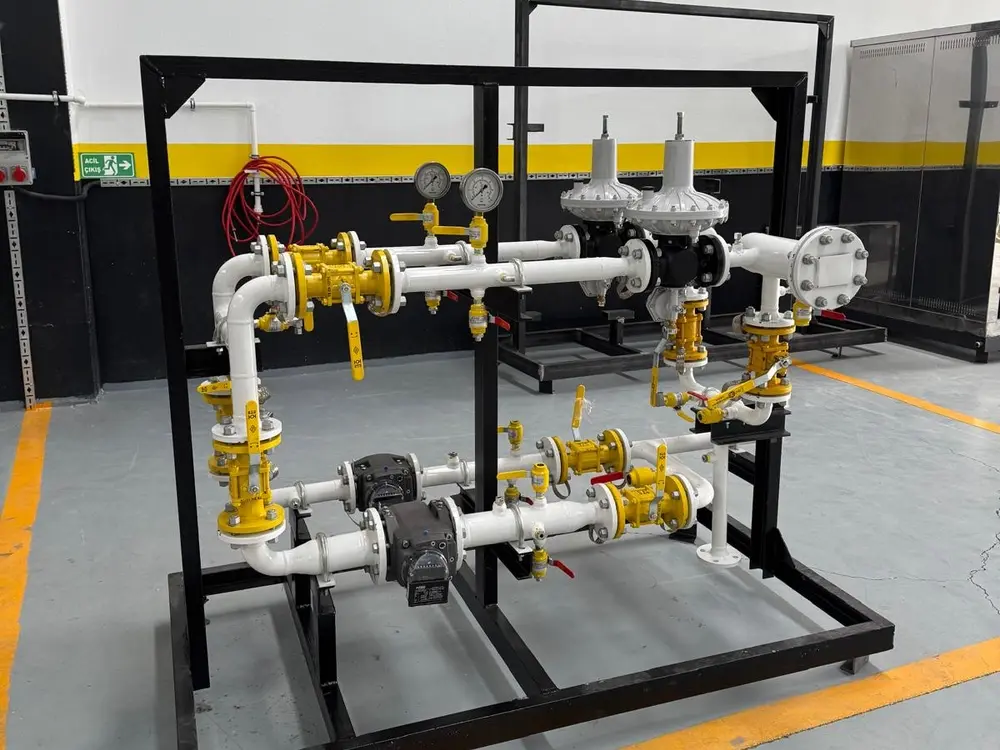

RMS ve RS doğalgaz basınç düşürme ve ölçüm istasyonlarında kesintisiz güvenlik, periyodik kalibrasyon ve 7/24 saha mühendisliği.

Endüstriyel üretim tesislerinin, enerji santrallerinin ve şehir dağıtım hatlarının can damarı olan RMS-A, RMS-B, RMS-C ve RS-C istasyonları, kesintisiz bir dinamik basınç ve debi kontrolü altında çalışır. Bu sistemlerde meydana gelebilecek milisaniyelik bir regülasyon kararsızlığı, filtre tıkanıklığı veya emniyet kapatma (SAV) gecikmesi; hem devasa üretim duruşlarına hem de telafisi imkansız güvenlik risklerine yol açabilir.
Nart Gaz olarak bakım anlayışımızı yalnızca "arıza çıktığında tamir etmek" üzerine değil; arızayı henüz oluşmadan engelleyen proaktif ve kestirimci bakım protokolleri üzerine inşa ediyoruz. Pilot regülatör yay ve diyafram kontrollerinden slam-shut emniyet vanalarının set değer testlerine, diferansiyel basınç (ΔP) transmitter kalibrasyonlarından eşanjör kireç-tortu temizliklerine kadar istasyonun tüm pnömatik, mekanik ve enstrümantal bileşenlerini fabrika çıkış toleranslarına geri döndürüyoruz.
Yüksek (OPSO) ve alçak (UPSO) basınç emniyet kapatma mekanizmalarının gerçek hat koşullarında tetikleme eşikleri test edilerek milisaniyelik tepki süreleri güvenceye alınır.
Ana regülatör ve pilot kontrol ünitelerinin sökümü, diyafram, O-ring, sit-klape yenilemeleri ve dinamik basınç dalgalanma testleri gerçekleştirilir.
Kartuşlu veya separatörlü çelik filtre elemanlarının değişimi, gövde partikül temizliği ve Joule-Thomson soğumasını dengeleyen su banyolu eşanjör bakımı.
Türbin/rotary gaz sayaçları, elektronik hacim düzelticiler (korektör), PTZ transmitterları ve telemetri veri aktarım hatlarının doğruluk kalibrasyonu.
İstasyon giriş-çıkış basınçları, debi trendleri, sıcaklık değerleri ve diferansiyel basınç göstergeleri kayıt altına alınır.
Yedekli hat devreye alınarak aktif hat güvenle izole edilir; regülatör iç takımları, contalar ve filtre kartuşları orijinal parçalarla yenilenir.
ATEX sertifikalı lazer gaz algılayıcılarla sızdırmazlık teyit edilir; SAV açma-kapama ve tahliye (relief) ventillerinin bar ayarları hassasça kalibre edilir.
Dağıtım şirketi ve EPDK normlarına uygun teknik rapor düzenlenir; istasyon tam operasyonel kararlılıkla devreye alınır.